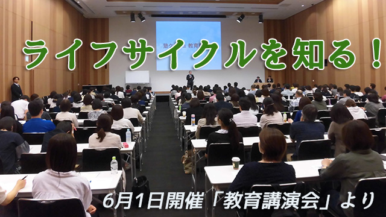
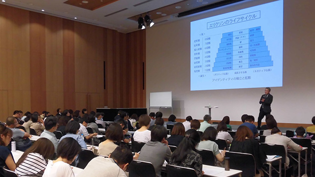

六月初日初夏を思わせるような日射しの中、某塾主催の講演会に呼ばれお話して来ました。
広くて立派な会場。二百名を越える人たちがギッシリと埋めつくす熱気。かなり緊張します。テーマは「子どもを伸ばす親のあり方」で主催者側の希望はハウツー的な話より親自身がいまどのような人生の段階にいるか、そして何を学ぶべきか本質的な話をというものでした。
「そんな小難しいテーマで聞いてもらえるのか⁉」
最初はそんな疑問をもったものの、私自身が子どものことより親が自らのやるべきことをやることのほうが大切だと思っているのでお受けした次第。
マァ、実際思春期の子どもをもつ親は人生の折り返し地点、いわゆる「中年の危機」を迎えているわけで親子共々アイデンティティがゆらいでいるという意味で不安定なんですね。家庭そのものが危険な状態…（笑）。
子どもはこの時期自我が芽ばえ「自分は何者？」「これからどんな人間になるのか？」と色々他者と比較したり「何ができて何ができないか」自分の限界を感じて悩み出す。
親は親で、今までの人生を振り返り「やり残したこと」や「もう若くないがこのままで良いのか」という思い、仕事や人生での行き詰まりを感じていたりする。もちろん子どもの将来や現状も心配。
だからどちらも不安定！親も子も両方が人生で大きな節目に立っているわけです。
これはしかし昔から多くの人々が指摘していることなんですね。人生には周期的に危機が訪れる。でも人間が成長する過程においては段階（ステージ）ごとに学ぶべき課題があり、その課題をクリアするごとにステージが上がる（成長する）。その課題の克服が「危機」と呼ばれるわけです。
いわゆるライフサイクル論ですが、これには西洋では心理学者のユングや発達心理学の創設者のエリクソンのモデルが有名で東洋でも古代インドのヒンズー教や老子のタオ、孔子の論語などが知られています。（日本の厄年というのも一種のライフサイクル的考え）

この日は主にユングとエリクソンのモデルを取り上げ、親の皆さんがこの時期（中年期、壮年期）克服すべき課題は何か、そしてそれを克服することが子どもの養育にどう役立つのかお話させていただきました。
最初は緊張のせいかシーンとしていた皆さんもエリクソンの「発達の８段階」説あたりから興味深げな表情となり、親の「無意識の思いや行為のほうが子どもに伝わる」という後半の話では「オーッ」という驚きとも感嘆ともつかぬ声があがり始めました。
いずれにせよこんな固いテーマの話にもかかわらず最後まで熱心に聞いて下さった皆さまに感謝したいと思います。またほとんどの方が終了後にアンケートを書いて下さり「子どもに向きがちな心を自分の課題に向けて学び続ける姿勢を保ちたい」とか「子どものためと言いながら実はコントロールしている親のエゴに気づいた」など意識の高さを感じる言葉が目につきました。
中には「さっそくエリクソンら心理学関連の本を買って帰るつもり」という方もいて私もお話した甲斐があったのかなと嬉しい気持ちになりましたね。ありがとうございました。
親が「中年の危機」を乗り越える事の大切さについてはまた改めて書いてみたいと思っております。